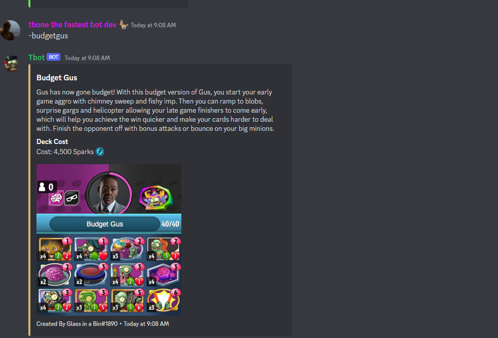
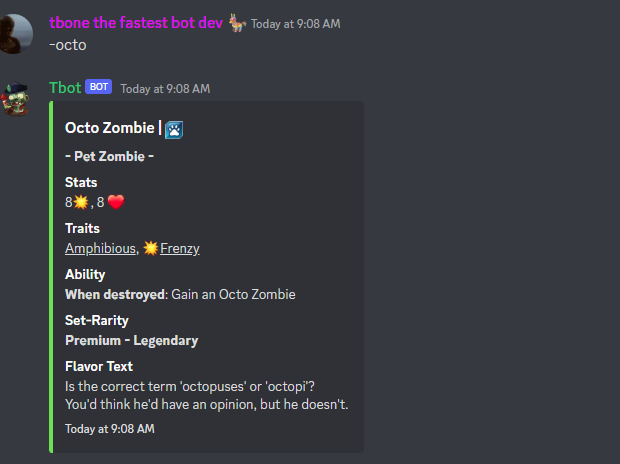
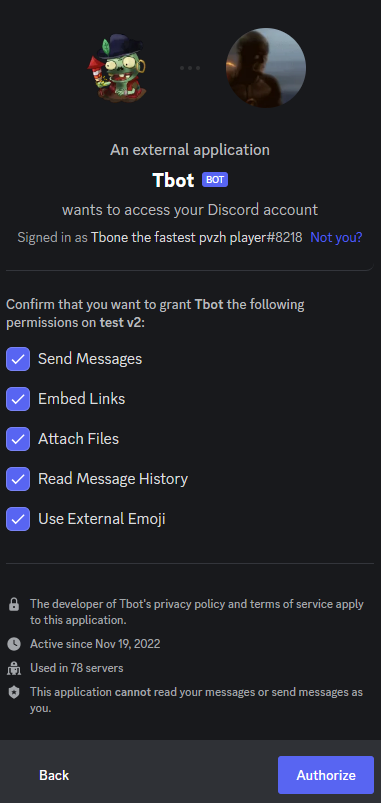

I am the creator and owner of tbot the pvzh discord bot that is able to show decklists I have the right to do what I want with this bot since i am creator and could just add more code to it
1. Show decklists for pvzh players if you need a deck you can use tbot easily to find one for you the bot has plenty of lists in it use -help then pick the hero category then do -deckname example below there is both budget and maxed decks

2. Show Card descriptions for all the cards in the game if you want to know more spefic info on a card in the game of plants vs zombies heroes just do -cardname for example -octo

3. You can play rps or do other things besides just pvzh stuff
4. There is a fun meme command with pvz memes if you are looking for pvzh memes just do -meme
5. lets say you dont know what deck you want to play then you can do -random and the bot will pick a random decklist for you to play there is also finish for me deck with the -finish command which will pick a random finish for me deck
6. any issues with tbot you can dm me on discord with Tbone the fastest pvzh player
#8218 my username
1. I am not responsible for people spamming commands in your channels it is up to you to hide tbot from certain channels so its commands wont work there you can reduce commands to only work in spam channels like that
2. I am not responible for you inving or kicking the bot its up to you to decide whether its worth it for your server or not
3. Bot does not have need or have admin perms the only perms it asks for are listed below

4. You are responsible to hide the bot from certain channels if you dont want his commands used there
5. I do not hold any data on users except their decks and their costs for their deck